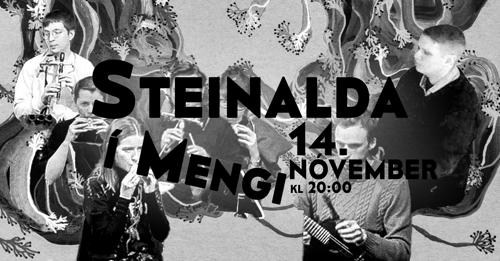
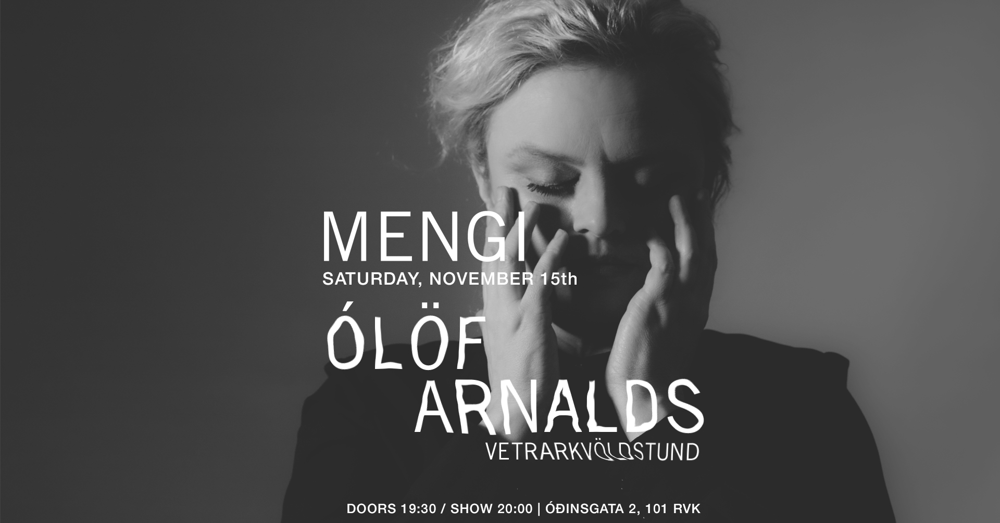
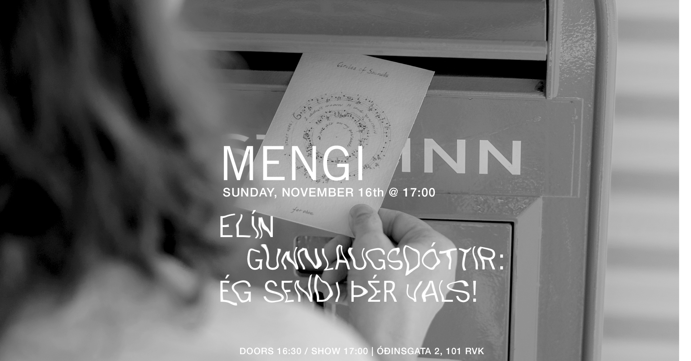

Upcoming Events
FRI 14.11 Guðmundur Steinn Gunnarsson: Steinalda
Tickets doors 19:30 / show 20:00 2500kr / 2000kr for students / pay what u can Á tónleikunum 14. Nóvember mun hljómsveitin Steinalda leika tvö ný verk í fjórum þáttum eftir Guðmund Stein Gunnarsson en þau heita: Hugleiðingar um skaðsemi eiturlyfja og Hugleiðingar um sorphirðu og hreinlæti Bæði verkin fá heildarfrumflutining á tónleikunum. Í þeim verða blokkflautur, flautur og púkablístrur af ýmsu tagi áberandi, innan um plokkuð strengjahljóðfæri s.s. banjó, mandólín og gítar ásamt rafmagnspíanói ásamt ýmsu tilfallandi drasli. Sveitin gaf út plötuna Landvættirnar fjórar árið 2022 og hlaut sú tvöfalda breiðskífa mikið lof (sjá neðst). Hljómsveitina skipa ásamt Guðmundi Steini: Þórunn Björnsdóttir, Steinunn Vala Pálsdóttir, Ásthildur Ákadóttir, Óskar Magnússon, Páll Ivan frá Eiðum, Andrés Þór Þorvarðarson. ______________________________________ The concert on November 14th will see the group Steinalda premier two new pieces by Guðmundur Steinn Gunnarsson and they are called: Hugleiðingar um skaðsemi eiturlyfja (contemplations on the harms of narcotics) og Hugleiðingar um sorphirðu og hreinlæti (contemplations on trash collection and hygiene) Those will be premiere performances for both pieces. In these pieces flutes and recorders play an important role, along with bird calls of various sorts. Also plucked strings such as banjos, guitars and mandolin in microtonal tunings are quite central along with a vintage wurlitzer electric piano. Also all players double on various pieces of garbage. The group released the double album Landvættirnar fjórar (The Four Land Wights) in 2022. Said record received some praise, as seen below. Along with the composer Guðmundur Steinn, the group consists of: Þórunn Björnsdóttir, Steinunn Vala Pálsdóttir, Ásthildur Ákadóttir, Óskar Magnússon, Páll Ivan frá Eiðum, Andrés Þór Þorvarðarson.
SAT 15.11 MENGI'S GIANT 1000kr RECORD SALE!
MENGI’S GIANT RECORD SALE! ALL RECORDS/CDS 1000kr!!!! WHOA! WHOA! WHOA! WHOA! WHOA! WHOA! WHOA! JACK ARMITAGE’S STRENGJAVERA LP RELEASE! LIMITED COPIES! 12:00-17:00 You may ask yourself "Whoa! This is impossible! How can they sell records for this cheap? IT'S CRAZY! Here at Mengi HQ, we have shelves and shelves full of records and CDs that have been in hibernation for years. We would love for you to give them a good home! Starting at noon on Saturday, November 8th, stop by Mengi and spend all your hard-earned money. Titles from the Mengi Records catalog as well as works by your favorite Icelandic and international artists. We will also be selling limited copies of Jack Armitage’s album of music for magnetic resonator piano, STRENGJAVERA (limited to 25 copies!). (DISCLAIMER: JACK’S RECORD IS NOT 1000kr)
SAT 15.11 Ólöf Arnalds: Vetrarkvöldstund
Tickets doors 19:30 / show 20:00 3000kr / 2500 for students Söngvaskáldið Ólöf Arnalds býður upp á notalega kvöldstund í skammdeginu þar sem hún mun leika ný lög sem koma út í byrjun desember á plötunni Spíra. Eins mun hún snerta á öðrum lögum úr sínum fórum eftir sig og aðra. The one and only Ólöf Arnalds will invite us to a cozy night of darkness and candle light where she will sing and play new songs from her upcoming album, Spíra, due in the beginning of December on Bella Union. Get ready for an evening of Ólöf's new compositions along with some classics from her repertoire. Ólöf Arnalds is an Icelandic composer and multi-instrumentalist. Her most distinctive asset is, nonetheless, her voice of instantly captivating, spring water chasteness possessed of a magical, otherworldly quality that is simultaneously innocent yet ancient (“somewhere between a child and an old woman” according to no less an authority than Björk). Her work has been called "otherworldly" by The New York Times, "stunning" by SPIN, "bewitching" by Rolling Stone, "remarkable" by the NME, "ethereal" by Vanity Fair and "impossibly lovely" by Paste. Ólöf Arnalds hóf feril sinn sem söngvaskáld með Við og við sem hún hlaut Íslensku tónlistarverðlaunin fyrir. Hún var valin ein af bestu plötum ársins af Paste Magazine og eMusic. Fyrir „Innundir skinni“ hlaut Ólöf Íslensku tónlistarverðlaunin sem tónsmiður ársins, auk þess sem platan var tilnefnd til Norrænu tónlistarverðlaunana. Fimmta sólóplata Ólafar, Spíra, er væntanleg 5. desember.
SUN 16.11 Elín Gunnlaugsdóttir: Ég sendi þér vals!
Tickets doors 16:30 / show 17:00 2500kr / 2000kr for students Á ferðum mínum um heiminn hefur mér alltaf þótt gaman að senda vinum og vandamönnum póstkort. Og ég hef haldið þeim sið áfram þrátt fyrir að núna sé auðveldara og fljótlegra að senda rafræn skilaboð. Síðustu ár hef ég nokkrum sinnum sent stutt tónverk á póstkortum til vina sem eru hljóðfæraleikarar. Titill tónleikanna Ég sendi þér vals vísar til þessa gjörnings en fjögur þeirra verka sem flutt verða á tónleikunum voru send á póstkortum til viðtakenda sinna. Þrjú þeirra nefni ég Hljóðferli og eru það stutt verk skrifuð í hring á eitt póstkort. Textinn aftan á póstkortinu eru svo leiðbeiningar til flytjandans um hvernig beri að túlka þessa hringi. Verkin sem flutt eru á þessum tónleikum eru frá 2015 og 2021. Hljóðferli I var sent til Katie Buckley og Frank Aarnink en Hljóðferli III og IV voru send til listamanna sem komu fram á Norrænum músíkdögum í Færeyjum 2021. Þau verða flutt hér af Bergdísi Júlíu Jóhannsdóttur og Eydísi Franzdóttur. Fjórða póstkortaverkið er aðeins viðameira en hin þrjú og er það flautudúett sem sendur var á tíu póstkortum til flytjendanna og er ber heitið geym oss í dag. Berglind María Tómasdóttir hefur gert myndband við verkið og verður það sýnt um leið og verkið er flutt. Verkið er eins konar mósaík byggt í kringum gamlan sálm sem heiti verksins er jafnframt sótt í. Verkið var sent árið 2023 til Berglindar Maríu Tómasdóttur og Pamelu De Sensi og munu þær flytja verkið. Valsar úr síðustu siglingu (2024) við ljóð eftir Lindu Vilhjálmsdóttur fellur ekki í flokk póstkortaverka. Í ljóðabókinni Valsar úr síðustu siglingu lýsir skáldið ferð sinni yfir hafið með fiskibát. Hægt er að tengja verkið við hin verkin á þann hátt að í því er verið að lýsa ferð frá einum stað til annars, rétt eins og póstkortið sem ferðast frá einum stað til annars. Ljóðin í bókinni eru fjörutíu talsins en aðeins eru notuð sjö þeirra. Verkið er samið fyrir Dúplum Dúó og eru lögin sjö tengd með rafrás þar sem rödd skáldins hljómar og einnig hljóð er tengjast hafinu og efni ljóðanna. Öll verkin sem hér heyrast eru skrifuð á seinustu fjórum árum fyrir utan Hljóðferli I. Það er von mín að áheyrendur fái með því góða innsýn í það sem ég hef verið að fást við á seinustu árum. Efnisskrá: Hljóðferli III (2021) - (frumflutningur á Íslandi) - Bergdís Júlía Jóhannsdóttir, rödd geym oss í dag (2023) - fyrir tvær alt flautur og myndband eftir Berglindi Maríu Tómasóttur (frumflutningur) - Berglind María Tómasdóttir, alt flauta og Pamela De Sensi, alt flauta Hljóðferli IV (2021) - (frumflutningur á Íslandi) - Eydís Franzdóttir, óbó Valsar úr síðustu siglingu (2024) - við ljóð eftir Linda Vilhjálmsdóttir, fyrir rödd, víólu og rafhljóð. Dúplum Dúó: Björk Níelsdóttir, sópran og Þóra Margrét Sveinsdóttir, víóla. Hljóðferli I (2015) - Dúó Harpverk: Katie Buckley, harpa og Frank Aarnink, slagverk Tæknimaður: Jesper Pedersen Elín Gunnlaugsdóttir (1965) nam tónsmíðar við Tónlistarskólann í Reykjavík og útskrifaðist þaðan 1993. Árið 1998 lauk hún framhaldsnámi í tónsmíðum frá Konunglega tónlistarháskólanum í Den Haag. Hún hefur unnið við tónsmíðar og kennslu frá því hún lauk námi. Verkaskrá Elínar samanstendur af kammerverkum, söngverkum og einnig hefur hún skrifað tónlistarævintýri fyrir börn. Elín hefur unnið með list sína í ýmsum formum, sent verk á póstkortum, gefið út bókverk og tekið þátt í myndlistarsýningum. Verk Elínar hafa verið flutt bæði hér heima og erlendis. // I’ve always loved writing postcards and one day I started to send music on postcards to my friends who are musicians. The title of this concert I’ll Send You a Waltz! refers to this habit of mine. Four of the pieces that will be performed in this concert were send on postcards to their performers. Three of them I call Circles of Sounds (from 2015 and 2021), but that are pieces written in circles on the postcard and on the back of the postcard there are written instructions to the performer how to interpret those circles. Circles of Sounds I was sent to its performers Katie Buckley and Frank Aarnink but Circles of Sounds III and IV were sent to performers that premiered them at the Nordic Music Days in 2021. They will be performed in this concert by Bergdís Júlía Jóhannsdóttir and Eydís Franzdóttir. The fourth postcard piece is a bit longer than the others and thats the piece geym oss í dag (2023) or stay with us today. It was send on ten postcards to its performers Berglind María Tómasdóttir and Pamela De Sensi. Berglind María Tómasdóttir has made a video for this piece and in this concert Berglind María and Pamela will play the music along with the video. The piece Valsar úr síðustu siglingu (2024) or Waltzes From the Last Voyage are seven songs for voice, viola and electronics. In this piece, a little bit like in the others, the idea is traveling from one place to an other or just like the postcard that travels from its sender to its recipient. The poems were written by the poet Linda Vilhjálmsdóttir and they are about her journey with a fishing boat from Iceland to France. I use the electronics to create the mood of the piece and there you can hear the voice of the poet and sounds related to the sea. All the pieces are written in the last four years except one of the Circles of Sounds. So I hope you will get a good feeling of what I’ve been doing in the last few years. Program: Circles of Sounds III (2021) - (Iceland premiere) - Bergdís Júlía Jóhannsdóttir, voice stay with us today (2023) - for two alto flutes and video by Berglind María Tómasdóttir (premiere) - Berglind María Tómasdóttir, alto flute and Pamela De Sensi, alto flute Circles of Sounds IV (2021) - (Iceland premiere) - Eydís Franzdóttir, oboe Waltzes From the Last Voyage (2024) - with text by Linda Vilhjálmsdóttir for voice, viola and electronics. Dúplum Dúó: Björk Níelsdóttir, soprano and Þóra Margrét Sveinsdóttir, viola. Circles of Sounds I (2015) - Dúó Harpverk: Katie Buckley, harp and Frank Aarnink, percussion Technician: Jesper Pedersen Elín Gunnlaugsdóttir (1965) studied composition at the Reykjavík Academy of Music and graduated from there in 1993. In 1998, she completed her postgraduate studies in composition from the Royal Academy of Music in The Hague. She has been composing and teaching since she graduated. Elínar's repertoire consists of chamber works, musical works and she has also written musical adventures for children. Elín has worked with her art in various forms, sent works on postcards, published book works and participated in art exhibitions. Elín's works have been performed both at home and abroad.

THU 20.11 Birgir Steinn Theodorsson & Sólrún Mjöll Kjartansdóttir
Tickets doors 19:30 / show 20:00 2500kr / 2000kr students / pay what u can Kontrabassaleikarinn Birgir Steinn Theodorsson og trommuleikarinn Sólrún Mjöll Kjartansdóttir hafa unnið saman við ýmis verkefni en loks fannst þeim tími til kominn að semja og flytja frumsamda tónlist eftir þau bæði. Hljóðheimur þeirra er tilraunakenndur þar sem samspil kontrabassa, trommusetts og ásláttarhljóðfæra er í forgrunni. Rytminn er teygður í allar áttir, andstæður, dulúðar laglínur og togstreita sem leysist upp í spuna. Á tónleikunum verður flutt tónlist af komandi plötu þeirra sem kemur út á næsta ári.

FRI 21.11 Róshildur
Tickets doors 19:30 / show 20:00 2500kr / 2000kr for students Fyrsta breiðskífa Róshildar er í bígerð og í Mengi ætlar hún að kveðja gamlar útsetningar og tilraunast með nýjar. Róshildur vefur saman hljóðfæraleik, marglaga raddútsetningum og hljóðgervlum. Til verður svífandi rafpopp fullt af nánd, djúpum hljóðheimi og íslenskum textum sem einkennast af einlægni og húmor í bland. Aldrei eru tveir tónleikar eins hjá tónlistarkonunni, en með lúppum, töktum úr umhverfishljóðum og hljóðfæraleik býður hún áhorfendum inn í sinn einstaka heim. Með útgáfu EP plötu sinnar árið 2023 kynnti Róshildur sig sem flytjandi og tón, takt og textasmið. // Róshildur is working on her first full length album and now she will use the intimate setting of Mengi to say goodbye to some old arrangements and experiment with new ones. Róshildur is the musical alias of the Icelandic/Danish performance artist Anna Róshildur. Loops, samples and a heavy bass, weaved together with layered vocal harmonies and a beat made from the sound of a squeaky chair. This is the soundscape that carries Róshildur’s melancholic but often humorous lyrics, sung in Icelandic. Her live sets are ever changing, looping her own voice, synths and saxophone, experimenting with ways to convey her thoughts. Róshildur’s alternative pop is a blend of melodic, stacked vocals and textured production. With her debut EP, titled (V2,2), she showcases herself as a songwriter, producer and performer.

SAT 22.11 PUNCH IN THE MOUTH FROM THE INSIDE V: Laura Ortman / Völva / rjstf5737616
Tickets doors 19:30 / show 20:00 2500kr / 2000kr for students / pay what u can LAURA ORTMAN (USA) A member of the White Mountain Apache tribe, Laura Ortman is a musician and composer who creates across multiple platforms, including albums, live performance, field recordings, and video works. As a soloist, Ortman performs on amplified and Apache violin, vocals, piano, electric guitar, and keyboard. Ortman’s My Soul Remainer (2017)—which exists as a freestanding composition, solo album, and a video collaboration with director Nanobah Becker—combines elegiac violin melodies, orchestral samples, and the urgent pandemonium of amplified violin. In the video work, Ortman performs each of these musical voices within landscapes of the desert Southwest, plucking and stroking her violin by a rocky stream, in a forest clearing, or against distant mountains. The video iteration of My Soul Remainer was included in the Whitney Biennial, New York, NY (2019), at which Ortman also presented a performance celebrating the summer solstice. In 2008, Ortman founded the Coast Orchestra, an all-indigenous orchestral ensemble. She has also collaborated with artists such as Tony Conrad, Jock Soto, Raven Chacon, Okkyung Lee, and Jeffrey Gibson. She has performed and presented work nationally and internationally at The Museum of Modern Art, New York, NY (2021); the Whitney Museum of American Art, New York, NY (2019); the imagineNATIVE Film and Media Arts Festival, Toronto, Canada (2017, 2011); Musée d’Art Contemporain de Montréal, Montréal, Canada (2017); and the Centre Pompidou, Paris, France (2009). VÖLVA VölVa is the solo project of musician Fíóna Rokk Steinunnardóttir where she explores all the unconventional ideas that live in her head. Unbound by genre VölVa tries more to capture an energy or spirit like the Norse seeresses of old. In an age of oversaturation and sameness, VölVa offers something rare: a voice that is unapologetically her own, shaped by myth, mischief, and a sense of self sufficiency in her creative purpose rooted deeply in the DIY ethos rjstf5737616 rjstf57376167374737818294959271616648492927673829924772626515395059716275802947161646596936589274515205726151859572729596736251950000000000000000000

FRI 28.11 Unfiled
Tickets doors 19:30 / show 20:00 2500kr / 2000kr for students / pay what u can Unfiled is the two-headed beast of Atli Bollason and Guðmundur Úlfarsson. They began working together in 2019 with a series of experimental A/V nights in Mengi. Their practice still revolves around certain key concepts established in those early days: feedback systems, the mechanics of signification, visual improvisation, memories, ghosts, noise. For Unfiled, music and visuals are not simply complimentary but inseparable. Their self-titled debut album (released in May 2025) was made in the post-industrial city of Łódź, Poland and drew comparisons with Emptyset, Ben Frost and Franck Vigroux. It is spacious and eerie yet often overpowered by deafening noise and chugging, metallic rhythms that evoke steam-powered looms and spinning machines. For their upcoming show in November, they’re eager to try out some brand new in-progress material for the first time. unfiled.bandcamp.com

SAT 29.11 Júlía Mogensen
Tickets
Saturday, November 29th
JÚLÍA MOGENSEN feat.
ÞÓRANNA DÖGG BJÖRNSDÓTTIR
JAN HENDRICKSE
doors 19:30 / show 20:00
2500kr / 2000kr
In collaboration with Þóranna Dögg Björnsdóttir:
Following their earlier collaboration Vitundin er spírall from Júlía’s upcoming album, where Þóranna composed for the halldórófón, Júlía and Þóranna now come together again to explore for the first time the dialogue between the halldórófón and Stacco, a new magnetic and AI-driven instrument created by Nicola Privato.
In collaboration with Jan Hendrickse:
Their first collaboration, a piece Jan composed for the halldórófón on Júlía’s forthcoming album for halldórófón and acoustic spaces, marked the beginning of their work together. Now performing together, Júlía and Jan continue this exploration through the halldórófón and Jan’s feedback and acoustic flutes.
Júlía Mogensen:
Júlía is a classically trained cellist, a keen interpreter of new and experimental music with an interest in the complex relationship between performer, instrument, and composition. She has collaborated and improvised with a broad range of artists—on stage, in recordings, across film, video, and sound art—both as a performer and composer. She was a member of the Iceland Symphony Orchestra from 2013 to 2019, and continues to appear regularly as a guest performer.
In recent years Júlía has been in creative collaboration with Halldór Úlfarsson, inventor of the halldorophone—a pioneering electroacoustic feedback instrument where she has been exploring the instrument’s unique possibilities through performances and commissioned works. She has just completed recording her first solo album, a four-piece project, in which four composers create original works for halldorophone and a chosen acoustic space, set to be released early 2026.

SAT 13.12 SPACESTATION Jólacoustic tónleikar + Iðunn Einars
Tickets Saturday, December 13th SPACESTATION JÓLATÓNLEIKAR / IÐUNN EINARS doors 19:30 / show 20:00 2.990kr Strákarnir í hljómsveitinni Spacestation hafa farið svaðilför um Íslenska tónlistarsenu seinustu misseri og hafa fest sig í sessi sem eitt öflugasta rokkband hér á landi um þessar mundir. Sveitin gaf út plötuna “Reykjavík Syndrome” fyrr á árinu sem hlaut lof gagnrýnenda og miklar vinsældir. Spacestation hefur einnig verið að gera mjög góða hluti erlendis en seinastliðna mánuði hafa þeir verið á tónleikaferðalagi um Evrópu og spilað í 14 borgum og fengið mjög góðar móttökur. Að loknum túrnum tekur við löngu verðskuldað jólafrí og friður og ró og ætla strákarnir að halda uppá það með þægilegum og kosy jólatónleikum í Mengi þann 13. desember næstkomandi. Seinustu tónleikarnir sem bandið spilar þetta árið! Spacestation spilar indí rokkað post-punk með shoegaze’uðu 60’s rokk ívafi. En lætin fá að víkja í þetta sinn og verður kvöldið með öllu rólegra móti þar sem þetta verða svokallaðir “acoustic” tónleikar, þeir fyrstu sinnar tegundar sem bandið flytur. Ekkert pedala stapp eða feedback suð heldur bara ljúfir strengjaslættir og kertaljós, tími til kominn eftir allann hamagang ársins. Hver veit nema nokkur jólalög komi við sögu? Og jafnvel jólagestur??